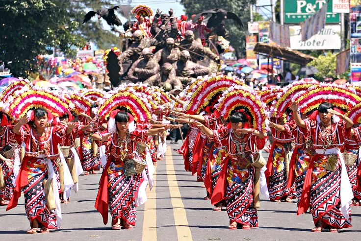
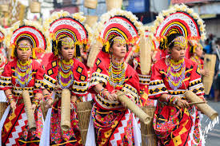
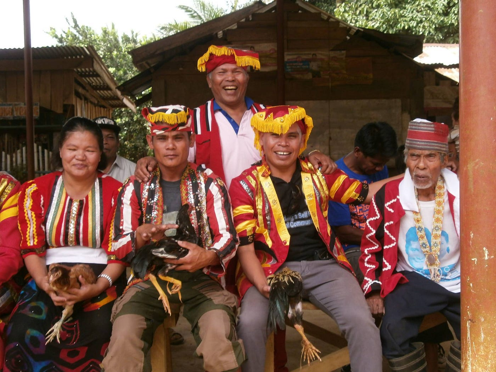
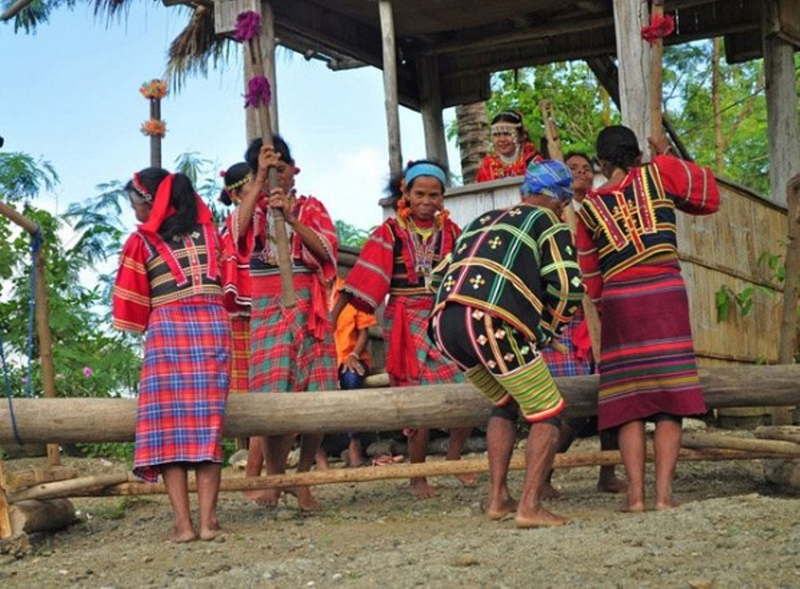
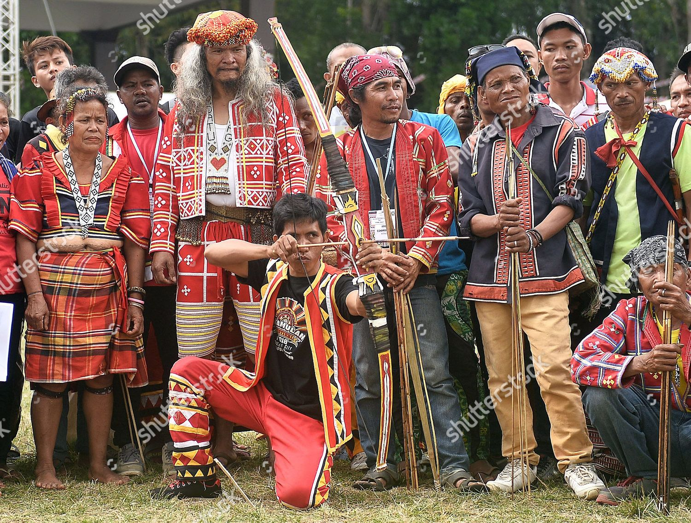
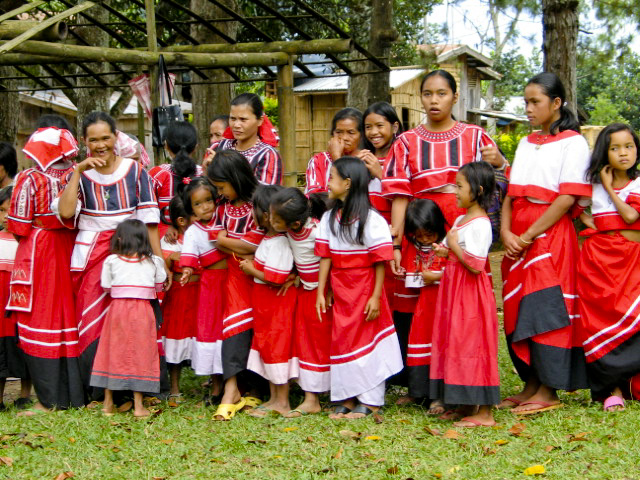
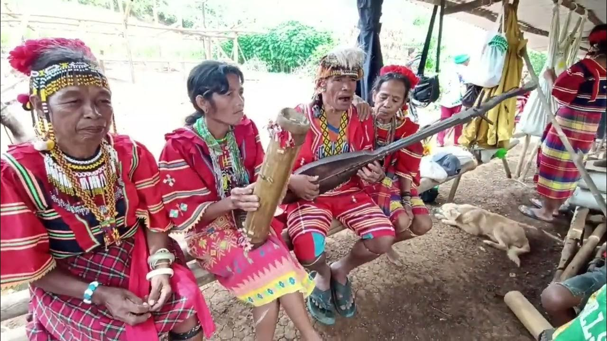
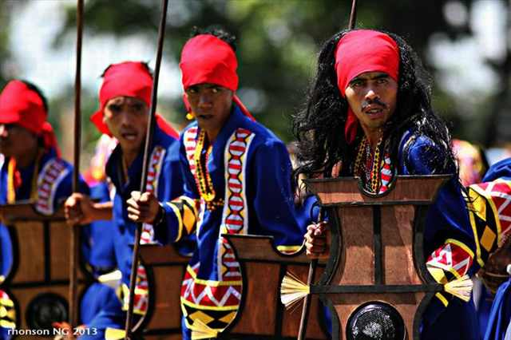
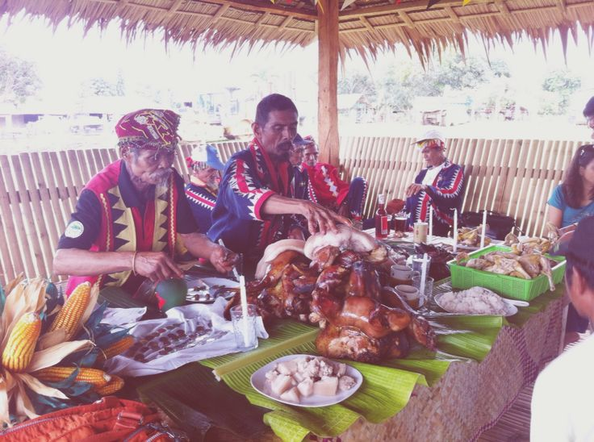
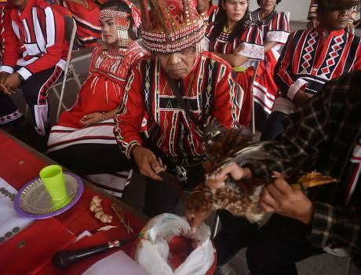

Dive deep into the rich tapestry of Bukidnon's indigenous heritage through our collection of stories, traditions, and cultural insights.

Kaamulan Festival: A Celebration of Indigenous Unity
👤 Niko Ebasco📅 October 28, 2025
Experience the grandeur of Kaamulan, where seven indigenous tribes unite in a spectacular cultural celebration that honors their ancestors and traditions.
The Kaamulan Festival is the highlight of Bukidnon's cultural calendar, bringing together the seven indigenous tribes of the province in a magnificent celebration of heritage and unity. Held annually in Malaybalay City, this festival transforms the streets into a vibrant tapestry of colors, music, and dance.
The word "Kaamulan" comes from the Binukid word "amul," meaning "to gather." True to its name, the festival gathers the Bukidnon, Higaonon, Talaandig, Manobo, Matigsalug, Tigwahanon, and Umayamnon tribes in a powerful display of cultural pride.
Participants don intricate traditional costumes adorned with beads, feathers, and handwoven fabrics. The rhythmic beats of indigenous drums fill the air as dancers perform ancestral rituals and tell stories of their people through movement. The festival features street dancing competitions, cultural exhibitions, trade fairs showcasing indigenous crafts, and ritual ceremonies that honor the spirits of nature and ancestors.
Beyond the spectacle, Kaamulan serves a deeper purpose: preserving indigenous culture for future generations and promoting understanding between indigenous and non-indigenous communities. It's a reminder that despite modernization, the ancient traditions of Bukidnon's first people continue to thrive, offering wisdom and beauty to all who witness them.
Tribes in Bukidnon

Dance: Binanog
The Binanog dance imitates the flight of a hawk, performed with wing-like movements and gong/kulintang music.
Songs: Antoka, Idangdang
The songs highlight bravery, romance, and ancestral stories.

Dance: Kaliga / Kaliga-on
A ritual dance for thanksgiving, protection, and honoring the spirits.
Songs: Bayok, Olaging
Their songs express epic stories and ancient spiritual traditions.

Dance: Dugso
A sacred circular dance celebrating gratitude and spiritual offerings.
Songs: Ulaging, Aday
The songs tell poetic stories rooted in Manobo heritage.

Dance: Inamong
A courtship dance representing respect, unity, and admiration.
Songs: Sambolayan, Ilang-Ilang
Songs express love, longing, and village life.

Dance: Talupak
A warrior dance showing bravery and the defense of ancestral land.
Songs: Guman, Lullabies
Their songs are rhythmic, symbolic, and deeply spiritual.

Dance: Saut
A victory dance performed after hunting or battle.
Songs: Ilaning
Songs that honor nature and tribal unity.

Dance: Tagkal
A ritual dance performed to seek healing, guidance, or blessings from the spirits.
Songs: Lantangon
Spiritual songs that reflect harmony between nature and ancestral beings.
Announcement
Kaamulan will be happening on February to March 10 2026.
The Art of Traditional Weaving: Threads of Heritage
👤 Jessie Antiquin📅 October 28, 2025
Delve into the intricate world of Bukidnon's traditional weaving, where every thread tells a story and every pattern holds ancestral meaning.
In the highlands of Bukidnon, the ancient art of traditional weaving continues to flourish, carried forward by skilled artisans who learned their craft from generations past. Using backstrap looms and natural fibers, weavers create stunning textiles that are far more than mere fabric they are living repositories of cultural knowledge and identity.
The traditional weaving process begins with preparing abaca or cotton fibers, which are carefully extracted, cleaned, and dyed using natural colorants from plants, roots, and minerals. Indigo creates deep blues, turmeric produces warm yellows, and various barks yield earthy browns and reds. These natural dyes not only create beautiful colors but also connect weavers to the land and its resources.
The patterns woven into the cloth are not arbitrary designs. Each geometric motif carries specific meanings—some represent mountains and rivers of the ancestral domain, others symbolize unity among tribes, and still others depict important cultural symbols like the binudbaran (dragon) or the katig (outrigger). The most intricate patterns require months of painstaking work, with weavers counting each thread to ensure perfect symmetry.
Traditional textiles serve multiple purposes in indigenous communities. They are worn during important ceremonies, given as gifts to mark significant life events, and used in ritual offerings. The quality of one's woven cloth often reflects social status and weaving skill is highly respected.
Today, young weavers are learning alongside their elders, ensuring this precious art form survives. Organizations are helping artisans access wider markets while maintaining fair trade practices. When you purchase authentic Bukidnon textiles, you're not just buying beautiful fabric—you're supporting cultural preservation and empowering indigenous communities to continue their ancestral traditions.

Sacred Rituals and Spiritual Practices of the Mountains
👤 Dodong Cahapay📅 October 28, 2025
Explore the spiritual traditions that connect Bukidnon's indigenous peoples to their ancestors, the land, and the natural world around them.
The indigenous peoples of Bukidnon maintain a rich spiritual tradition that views the natural world as sacred and interconnected. Their rituals and ceremonies reflect a deep understanding that humans are not separate from nature, but an integral part of a living, breathing ecosystem.
Central to indigenous spirituality is the belief in "diwata" (nature spirits) who inhabit mountains, rivers, trees, and rocks. Before planting crops, hunting, or entering sacred areas, rituals are performed to ask permission and give thanks to these spirits. The "datu" or tribal leader often serves as spiritual intermediary, conducting ceremonies with offerings of betel nut, rice wine, and sometimes animal sacrifice.
The "pangalay" or thanksgiving ritual is particularly important, performed after harvests to express gratitude to the earth and spirits for their bounty. Participants gather in a circle, sharing food and drink while the datu chants prayers in the ancient language. This ritual reinforces community bonds while acknowledging the interdependence of all living things.
Healing rituals also play a crucial role in indigenous culture. Traditional healers, known as "babaylan" or "balyan," use a combination of herbal medicine, ritual chanting, and spiritual practices to treat illness. They believe many ailments stem from spiritual imbalance or offended nature spirits, requiring both physical and spiritual healing.
Coming-of-age ceremonies mark the transition from childhood to adulthood, with different rituals for boys and girls. These ceremonies teach cultural values, responsibilities, and traditional knowledge necessary for adult life in the community.
Despite centuries of external influence, these spiritual practices persist because they provide meaning, identity, and practical guidance for living in harmony with the environment. They remind us that indigenous wisdom offers valuable lessons about sustainability, community, and respect for all life.

Leadership & Harmony
👤 Jhon Bolaton📅 October 28, 2025
In the heart of Mindanao lies the province of Bukidnon, a land known for its rolling highlands, fertile soil, and deeply rooted traditions. Beyond its breathtaking landscape, Bukidnon is home to people who live by values that have been passed down for generations — one of the most important being harmony and leadership.
Among the seven indigenous tribes — Bukidnon, Higaonon, Manobo, Matigsalug, Talaandig, Tigwahanon, and Umayamnon — leadership is not about power, but about service, wisdom, and balance. These values shape the lives of the Bukidnon people and guide their way of living in peace with each other and with nature.
The Role of the Datu: A Leader with a Purpose
In Bukidnon society, the Datu serves as the tribal leader or chieftain. But unlike modern political leaders, a Datu’s authority comes from respect, wisdom, and moral integrity, not wealth or status.
A Datu is chosen for their honesty, fairness, and ability to maintain peace. They act as a mediator in conflicts, a guide in decision-making, and a protector of traditions. The people trust the Datu to speak with fairness, always seeking what is right for the community rather than for personal gain.
This kind of leadership creates harmony — because it is rooted in mutual respect and collective well-being.
The “Tampuda hu Balagon”: A Symbol of Peace
One of Bukidnon’s most meaningful cultural practices is the “Tampuda hu Balagon”, which literally means “peace pact.”
When tribes or families are in conflict, the Datu calls for a Tampuda hu Balagon to settle disputes peacefully. Instead of violence, both sides come together, perform a ritual, and promise reconciliation. The act of binding vines (balagon) symbolizes unity and forgiveness — showing that peace is stronger than anger or division.
This practice reflects the Bukidnon people’s deep belief in restoring balance rather than causing harm. It’s a powerful tradition that teaches how true leadership values peace above pride.
Harmony with Nature and the Spirit World
Leadership in Bukidnon culture also extends beyond human relationships. The Datu and tribal elders are responsible for maintaining harmony with nature and the spirit world.
Before planting, hunting, or building, they perform rituals (pamuhat or kaliga) to ask permission from the spirits that dwell in rivers, forests, and mountains. This shows their respect for nature and their understanding that humans are merely stewards of the land.
This kind of leadership — one that honors both people and the environment — keeps their society in balance and harmony.
The Strength of Unity
What makes Bukidnon’s concept of leadership special is that it’s shared. The Datu listens to the voices of the elders, women, and even the youth. Decisions are made through consultation, reflecting the belief that everyone has a role in maintaining peace.
This strong sense of community ensures that no one is left behind — every person is part of the greater whole. When harmony exists, people live in cooperation, not competition.
A Model of Peaceful Leadership
In today’s fast-changing world, the Bukidnon tribes remind us that true leadership is not about control, but about care. It’s about leading with humility, protecting what is good, and restoring what is broken.
Through the wisdom of their Datus, their commitment to peace through the Tampuda hu Balagon, and their respect for all living things, the people of Bukidnon show that harmony and leadership can walk hand in hand — creating a community that thrives not through power, but through peace.